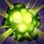
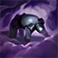

SERPENTINE GRACE
Cassiopeia gains Move Speed per level, but she cannot purchase Boots items.
NOXIOUS BLAST
Cassiopeia blasts an area with Poison after a brief delay, granting her increased Move Speed if she hits an enemy champion.
MIASMA
Cassiopeia releases several clouds of poison, slowing, grounding, and lightly damaging enemies that pass through them.
Grounded enemies cannot use Movement abilities.
TWIN FANG
Cassiopeia lets loose an attack that deals increased damage to Poisoned targets and heals her for a percentage of the damage dealt.
If the target dies from this attack, Cassiopeia regains Mana.
PETRIFYING GAZE
Cassiopeia releases a swirl of magical energy from her eyes, stunning any enemies in front of her that are facing her and slowing any others with their back turned.